Check Out My Work!
-Click the images for more information-
Name Tag
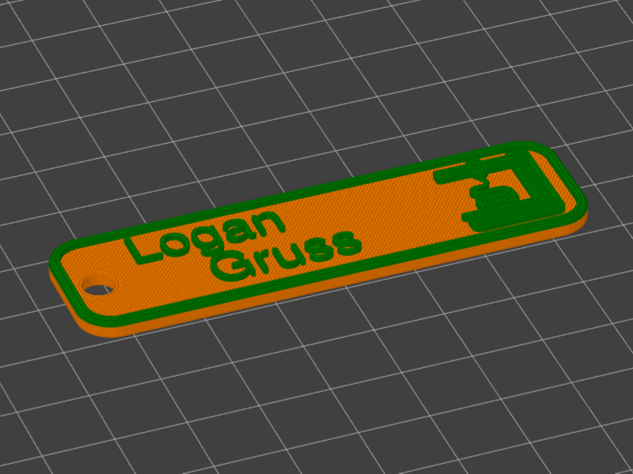
Calibration Test
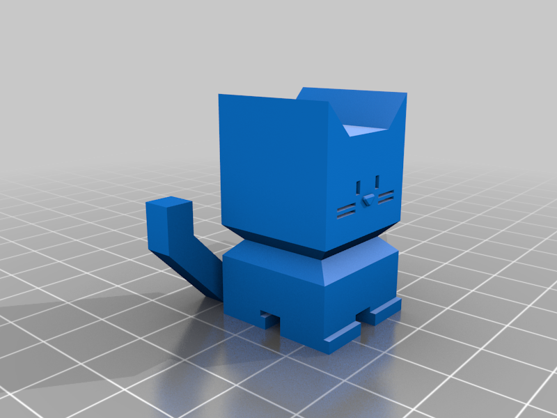
Assistive Writing Device
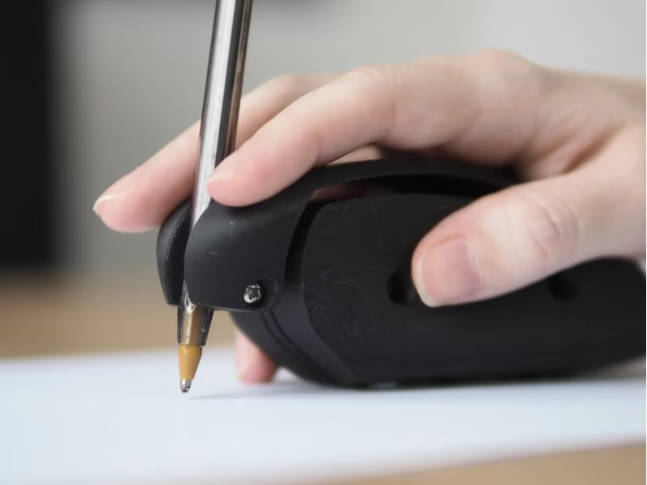
Tracking Car
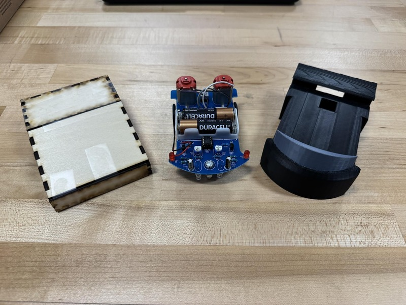
Desktop Waste Basket
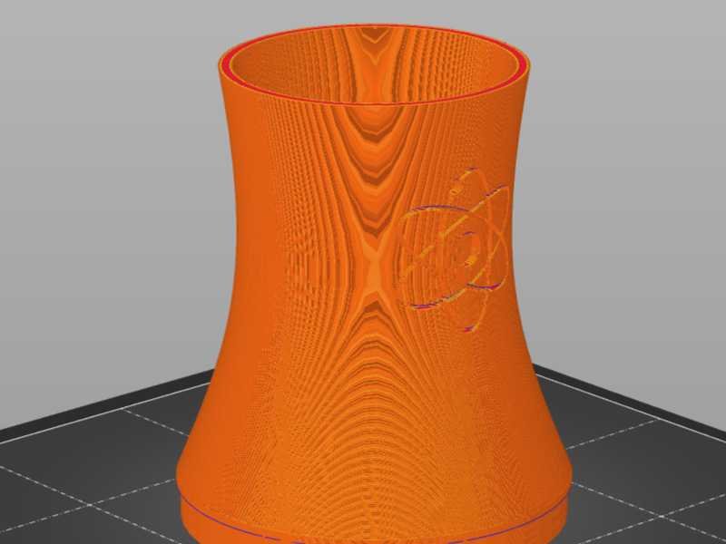
Prosthetic Hand
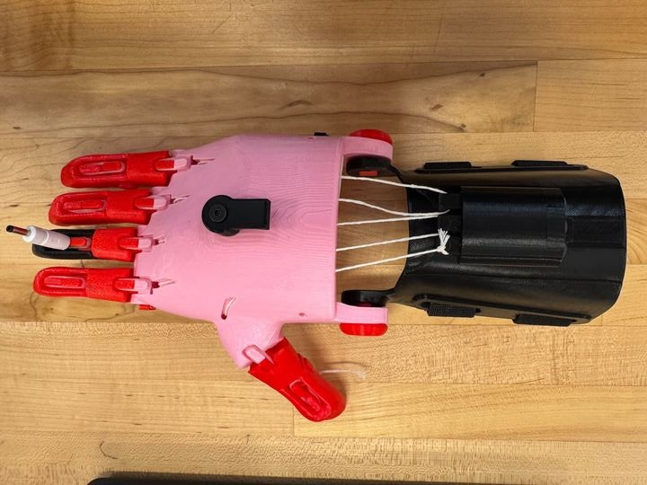
Name Tag
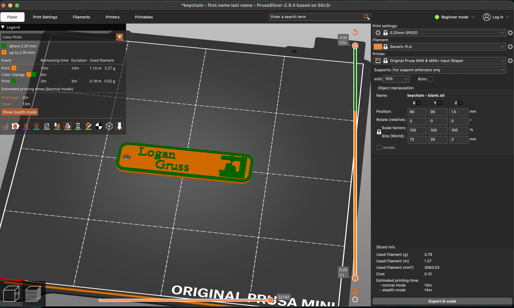
Figure 1.1 (Click the image to view fullscreen)
For my first project (Figure 1.1), and my introduction to 3D printing, I started by creating a nametag. The design for the tag was pulled from an open source. The overall focus of this print was not famaliarizing myself with the design process but understanding the machine, itself. In lieu of studying a few different CAD (computer aided design) softwares and their capabilities and limits, I started by looking at the CAM (computer aided machining) aspect. The reason for this is because by understanding what the machines are capable and incapable of, I can keep those parameters in mind while designing on the software of my choice. This allows me to stay grounded in the reality of what can actually be created and what would fail in the physical world; which may have succeeded in the digital one.
Settings (pictured above):
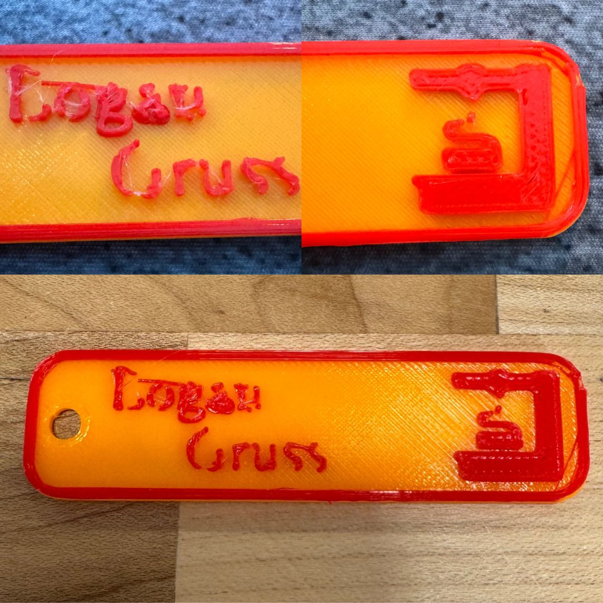
Figure 1.2 (Click the image to view fullscreen)
Issues:
During this print I was required to manually swap the filament I was using in order to achieve the color change. However, when swapping to the second filament color, the motor located above the extrusion tip did not effectively "grasp onto" the filament when I pushed it through. This mistake caused the printer to "ghost print" or in other words, the machine started performing the task, as instructed by the code, but had no substance to actually create a physical print. When I noticed and adjusted the filament so the motor can catch it, the printer was now releasing the melted filament slightly higher than it should have been. Consequently, the machine was not printing flush to the tag. This created the stringy effect and disconnects that are apparent in Figure 1.2. In order to avoid this issue in the future, prior to beginning the print I will ensure the filament is properly aligned.
Cali-Cat
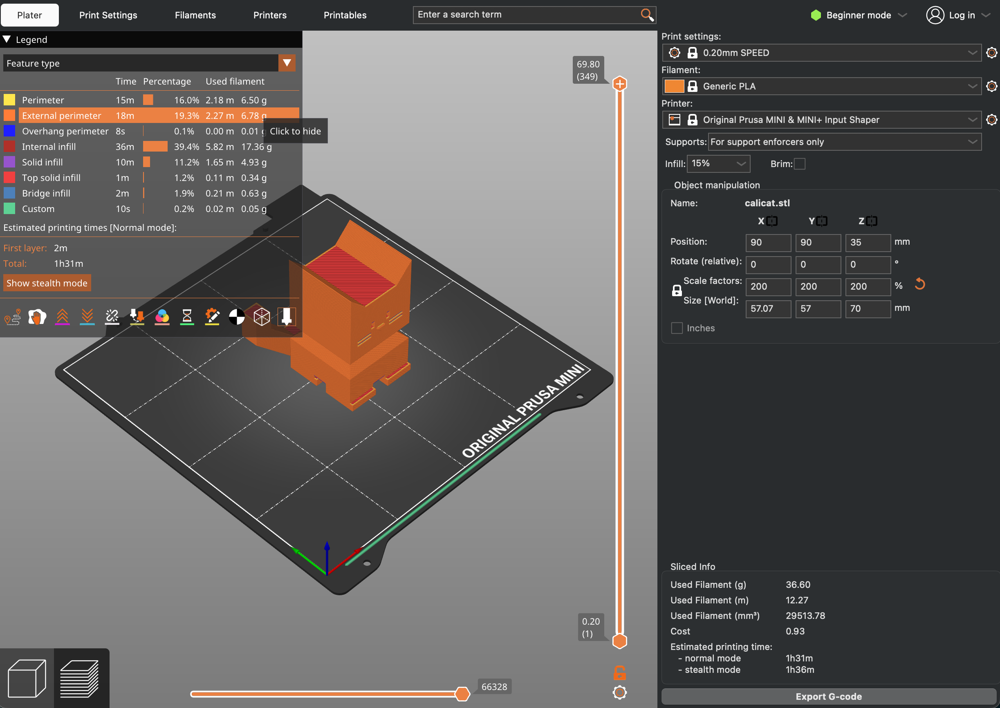
Figure 2.1 (Click the image to view fullscreen)
I created this print with the intention of testing the limits of the machine I was using, being the Prusa Mini+. Prior to beginning the print, I looked at the (.3mf) file and tried to hypothesize some expected issues that might arise with the stress test. My first observation was that the end of tail had no support at all, which could lead to a collaspe during the print. Another set of potential issues were the ears of the cat. As the angle becomes sharper I was concerned they might have become distorted as the thin amount of filiment tried to balance on the tips of the ears. Finally, I was worried the base of the print, between the four legs, would slightly droop in the center. I thought this might occur due to the center of gravity pulling on that point the most during the print.
Settings (pictured above):
Figure 2.2 (Click the image to view fullscreen)
Issues:
Given the structure and size of the print, the calibrartion test did not show any significant stress on the machine or faults in the print. Although when taken from the print plate there were a few strings of filament hanging off, those strings are expected and easily removed. This was unlike my Name-Tag project in which the strings of filament were far denser. The Name-Tag strings fell more towards failure than the Cali-Cat's. I was convinced the tail would sag based on the (.3mf) file, however, that portion of the print seemed to stabalize nicely. This is due to two different factors. The first being the angle in which the tail is positioned. Certain printers and filament can withstand certain amounts of "hang-over" before collapse. This proves that the tail was under that thresh-hold and did not fail. Secondly, the size of the cat allowed for the mass of the tip of the tail to be very low compared to the base of the tail. Because the mass is so little, the torque pulling on the tip was not enough to cause a collapse due to the mass build up in that section. One slight fail I noticed was the base of the cat between the legs started to sag, as seen in Figure 2.2. This is because the legs were a bit too far apart for the first layer of the base to remain fixed in place. The filament comes out very hot, so if there is not enough stablization for what's being printed, the first few passes of the printer could leave the filament sagging. When doing another calibration test I am going to try for something of a larger scale to try and induce more points of failure.
Assistive Writing Device
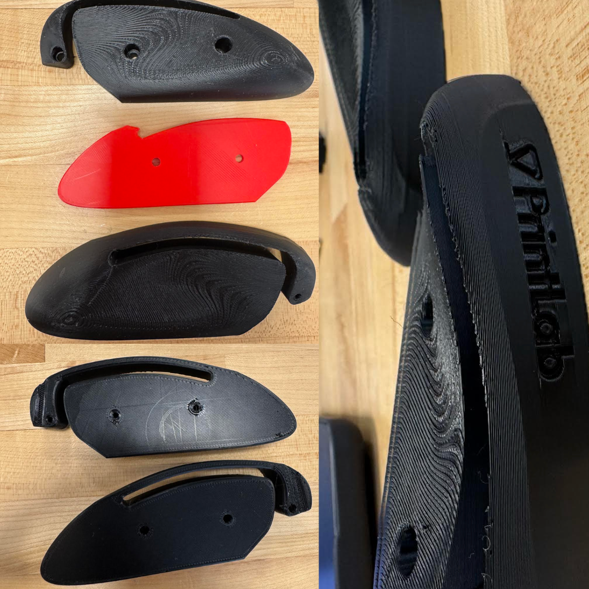
Figure 3.1 (Click the image to view fullscreen)
I decided to build this device based on its practical applications and similarities to an already widley used product. The assistive writing tool I printed from an open source design mimics the structure of a common computer mouse. This design is not only easy to hold for those with minimal strength in their fingers, but also allows the user to smoothly maneuver the device on most surfaces; as you would a computer mouse. The device was a three part print which required a small amount of hands on construction. The overall use-case for the device is to assist users with difficulty in writing by providing a stable point for the writing utensil and easy to hold control point.
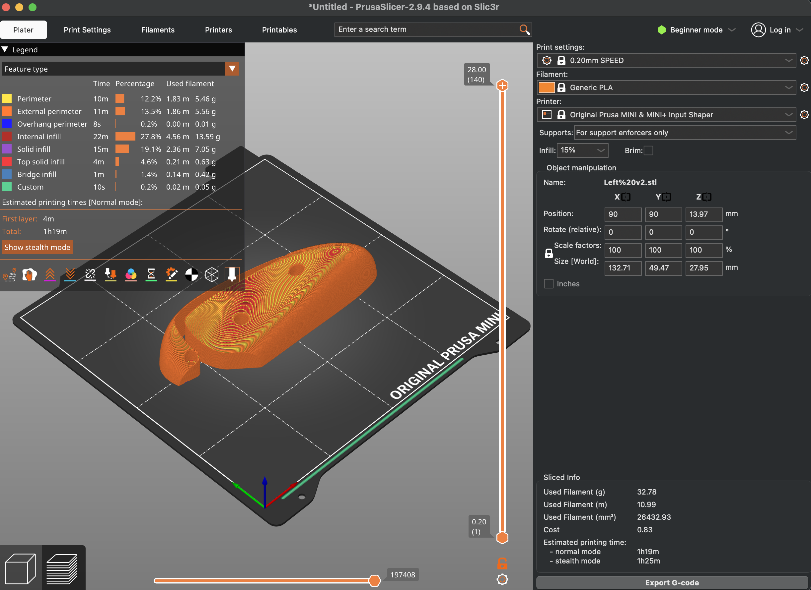
Figure 3.1 (Click the image to view fullscreen)
Settings Left Side (pictured above):
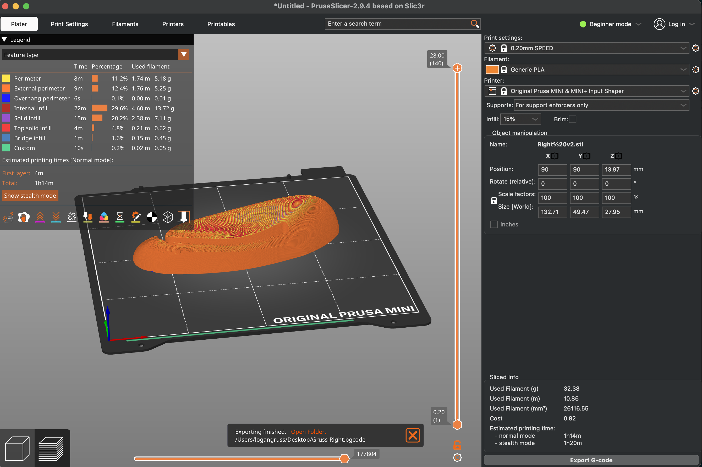
Figure 3.1 (Click the image to view fullscreen)
Settings Right Side (pictured above):
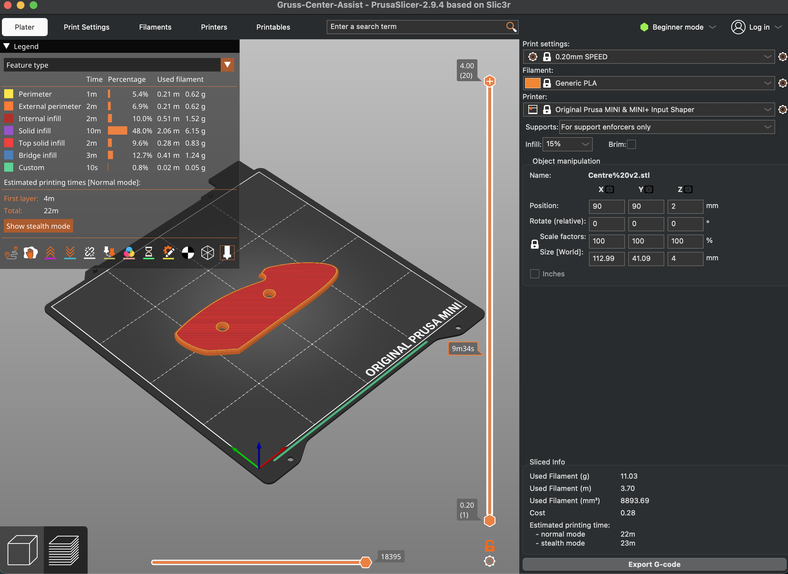
Figure 3.1 (Click the image to view fullscreen)
Settings Center (pictured above):
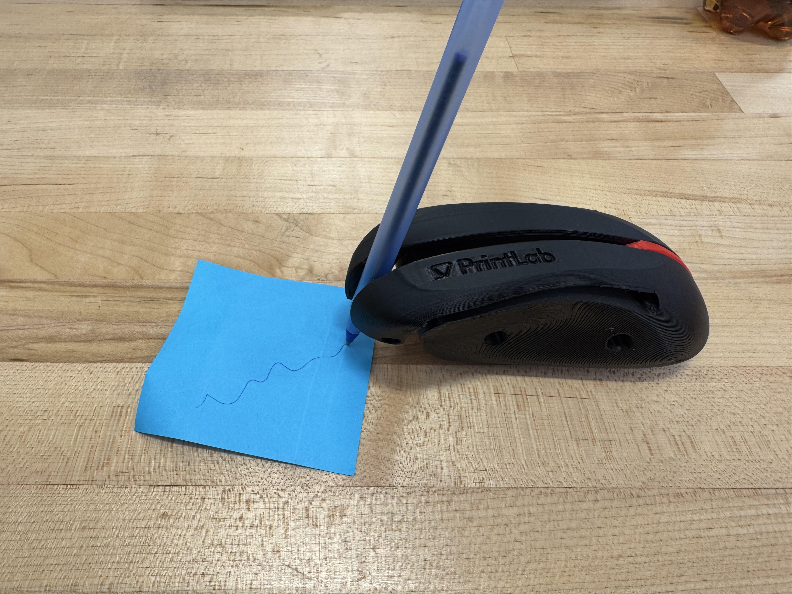
Figure 3.5
The completed product (Figure 3.5) requires about 2-5 minutes of manual assembly, where I was required to insert two M3 x 20mm screws into the sides. For the clamp that holds the pen, I also inserted another M3 x 20mm screw. The final build is sturdy and easy to move around on most traditional desktop surfaces. The size of the pen that the device can hold varries, but in general fits any writing utensil without a grip. Overall, my hopes are that this can help those struggling to grasp a thin object like a pen, as well as, create a stronger anchor point when writing.
Issues:
The left and right sides of the device had virtually no printing issues whatsoever. The only distortion was a slight fold in the area which the user would insert a screw. However, given the function of the hole, this should not be a major issue. When creating the center of the device I came across a much greater problem. When printing, the print began with a very thin layer of the base of the object but then was trapped in a loop moving from a point A to a point B over and over. This happened twice, until I replaced the (.bgcode). After that the print functioned normally. The cause of this issue seemed to be within the code I uploaded to the machine. I say this after a series of trial-and-error. I first examined the filament, which was properly aligned, I then ensured the plate was of correct height and the nozzle not clogged in anyway. After switching to a second printer, and having the same exact issue I deduced it was an issue with the file. After recreating and reuploading the file, the print succeeded. It is important to note that the filament could have been broken at a certain point when fed into the machine. This is unlikely though, given the same issue occurred on separate machines. However, moving forwards a slight "bend-test" prior to inserting the filament can ensure it has not accumulated too much water.
Line-Tracking Car
This was a joint venture between Ben Khayat and myself in which we explored a few different mediums for constructing a path following kit-car. The vehicle uses two sensors to determine the color change (from bright to dark) of the path and corrects accordingly. The ability to detect these changes, keeps the car focused on the dark electrical-tape path we created.
The kit we used came with all the needed components, including two sensors, motors, wheels, and essential capacitors and resistors (shown in Figure 4.1). We soldered on all the necessary components, which I detailed further below along with certain issues we had. Prior to our build, neither of us had had any experience soldering. The manual (linked here: https://m.media-amazon.com/images/I/A1lEYFXJO1L.pdf) gave thorough instructions with images, however, it did not provide much insight on the soldering process. For example, certain components required different strategies for making the solder joints. The manual, however, wrote all instructions the same regarding "how" to solder the components.
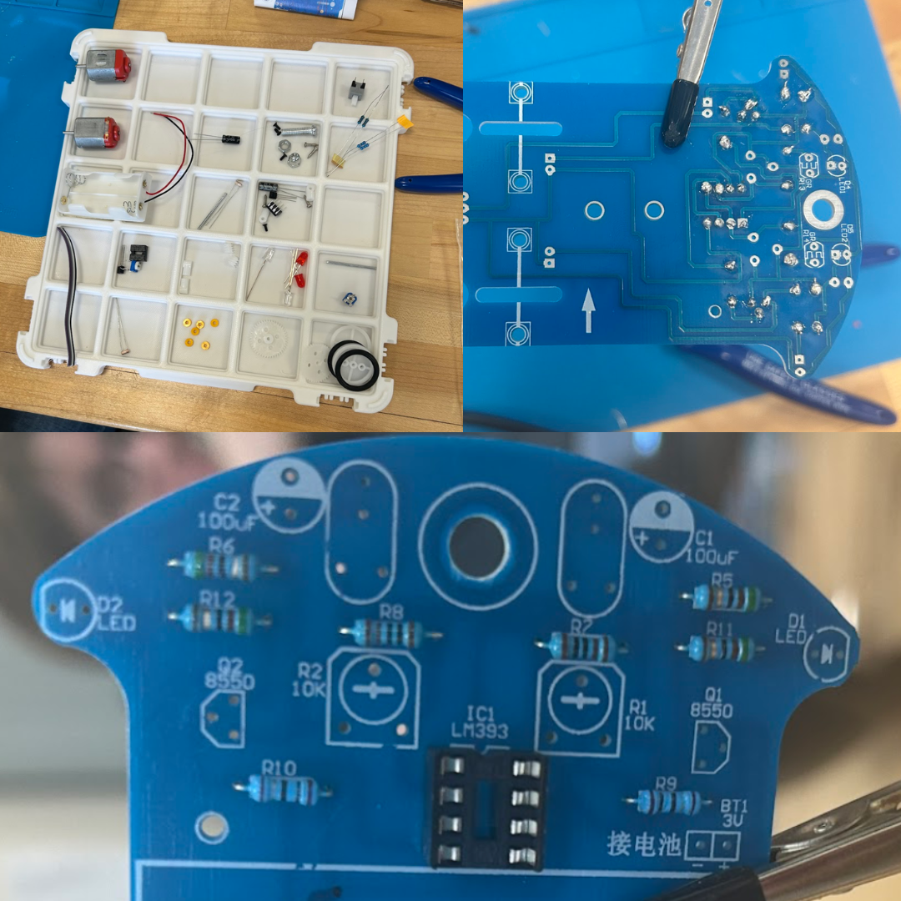
Figure 4.1 (Click the image to view fullscreen)
Constructing The Circuit Board
Prior to constructing the chassis for the car, we needed to solder the parts, shown in the tray above, to the circuit board. We found it helpful to organize our workspace prior to beginning. To best split the work load, we each soldered a few components and then the other would solder an equal amount until we were finished. On the first day, we were using an old soldering iron which downgraded the quality of each solder. In order to combat this, we were constantly tinning and cleaning our iron with iospropyl alchohol. Luckily on day two, we acquired a much newer iron, and therefore had cleaner solders and were no longer required to tin the tip each time. This is apparent in the top right photo in Figure 4.1, by the difference in solder quality. Besides capacitors, LEDs, resistors, components to set the intensity of correction, and other parts for our board, we also had sensors and motors. The sensors allowed for our kit-car to determine the intensity of color on it's left and right sides, which keeps it in line. These sensors would then drive power to either the left motor or right motor depending on what is needed to continue on the dark line. The two LEDs on the front-sides, indicate which wheel is recieving power. The angle of intesity the vehicle will take is dependent on a set of controls that we had to adjust until we were satisfied with the movement. For a turn of too great an angle could send the car off the track and it become "lost." I included a sketch of the dimensions of the board down below.
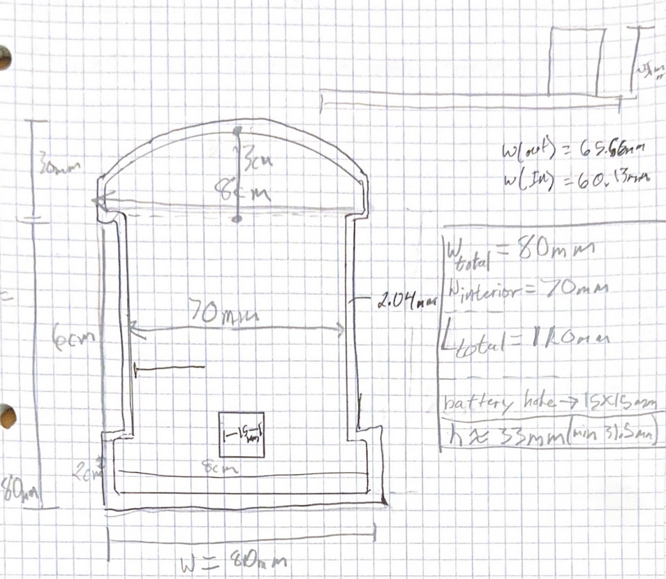
Figure 4.2 (Click the image to view fullscreen)
Dimensions:
Width (total)=80 mm
Width (interior)=70 mm
Length (total)=110 mm (30mm+80mm)
On/Off Slot=15x15 mm^2
Height= 31mm minimum
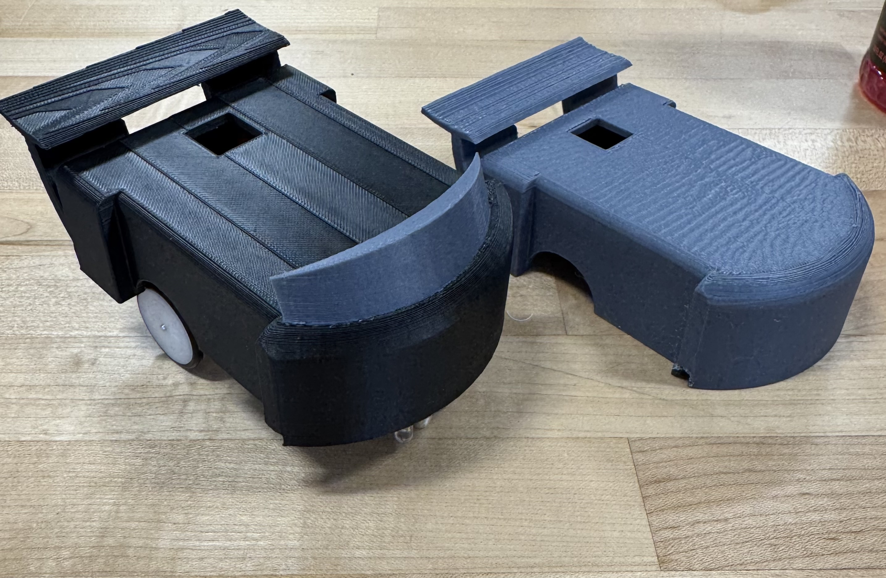
Figure 4.2 (Click the image to view fullscreen)
3D Printed Chassis
We decided to create two alternative prints for our project, working together in a shared OnShape space. We shared this responsibilty by adjusting and adding to the project as we both saw fit. The first, being the fully grey print in Figure 4.2, was a focus on scale and fit. In order to determine the proper dimensions for the print we used a caliper to find the length, width, and height of our car. It is important to also pay special attention to the front of the car, which was an arc instead of a flat bumper. By finding the radius of that arc, we easily scaled the front. The first print provided us with confirmation that our dimensions were correct and additions were not outside the realm of our printer's capabilities. This model also ensured we followed the proper guidelines, which allows us to remove the cap to access batteries, provides a small hole for the power button, visibility to LEDs, and free sensors. We printed the first model upside down, to avoid supports in the inner cavity, after ensuring the print preview looked successful by checking the layers in Bambu Studio, we completed version 1.
For our second print, we decided to test multi-filament printing, along with stressing angles to see if it would fail without support. Starting with the angular stress, the windshield is tilted at approximately a 40 degree angle, within the threshold of the print, and therefore succeeded nicely. We also added two faux exhausts on the back to test whether the small exhuast ports would cave-in on itself, it did not! Secondly, we flipped the print, so this time, there were supports holding up the inner cavaity. This provided a cleaner top surface than our first print. Finally, we decided to use two colors to excentuate the windshield and exhausts. Although this increased print time, requiring a filament tower, it also improved the aesthetic and clearly depicts which objects are part of the chassis, itself, and which are existing for visual imrpovement.
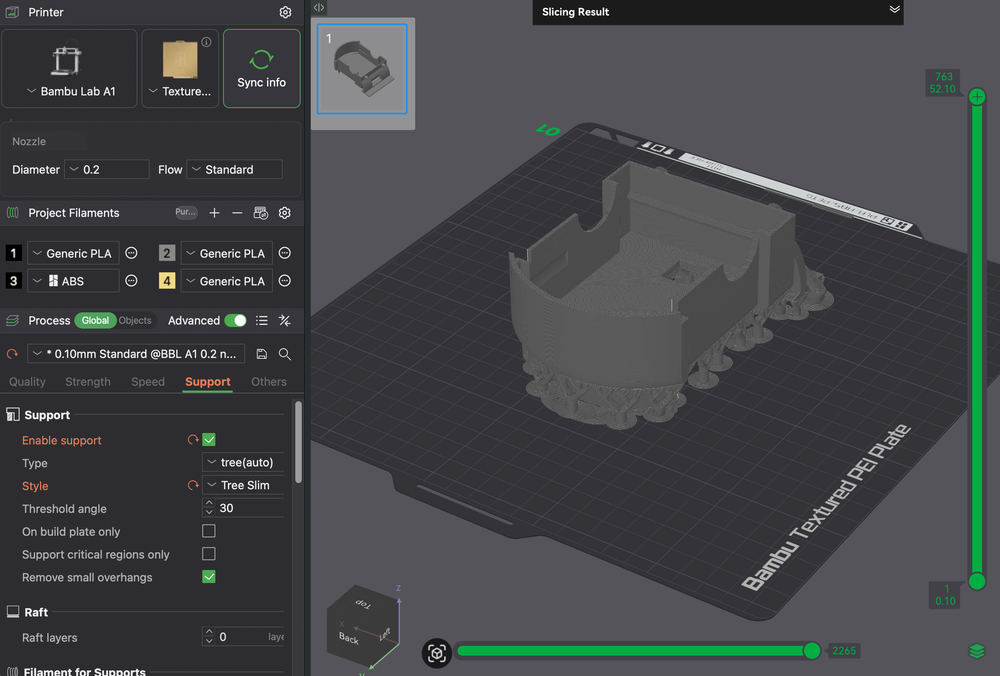
Figure 4.3 (Click the image to view fullscreen)
Settings Print 1-Grey (Figure 4.3):
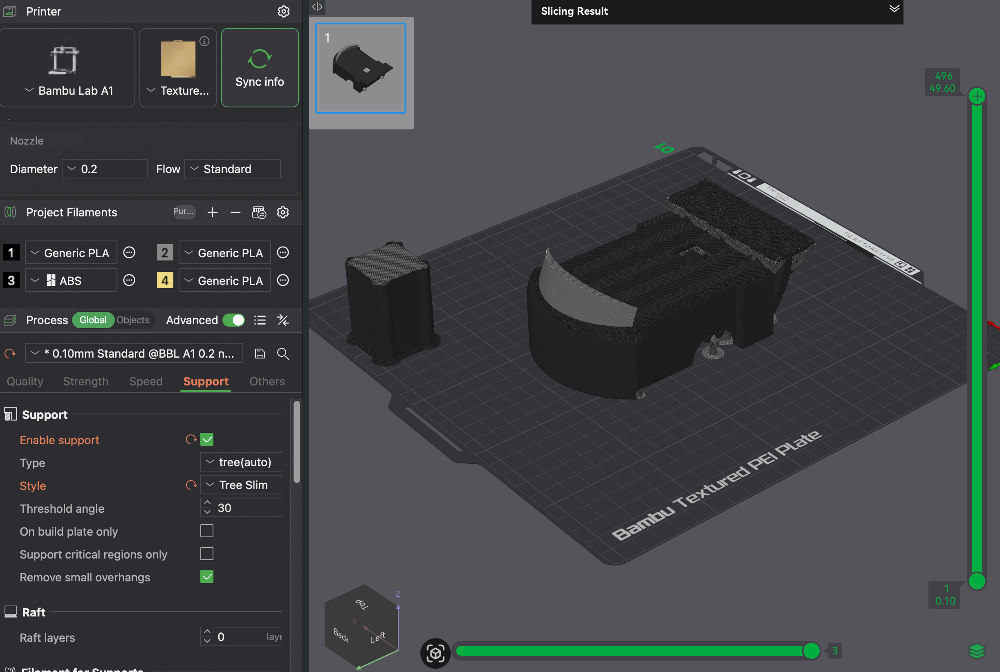
Figure 4.4 (Click the image to view fullscreen)
Settings Print 2-Black/Grey (Figure 4.4):
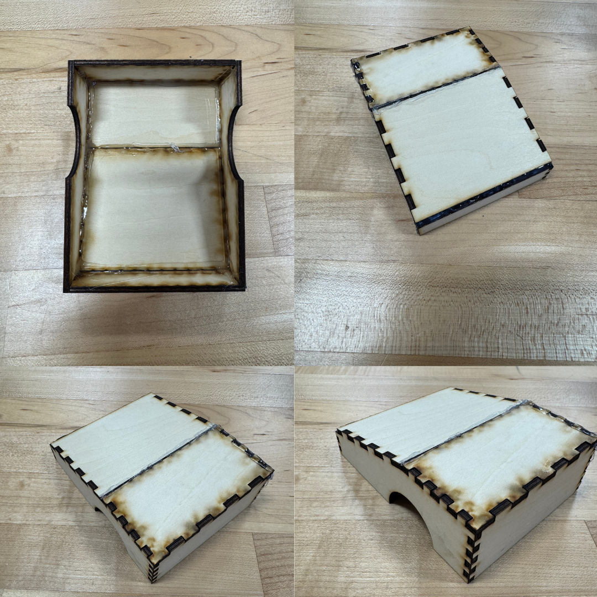
Figure 4.5 (Click the image to view fullscreen)
Laser Cut Chassis
We also created a wooden laser cut, using 3mm plywood sheets. To deisgn our laser cut, we used OnShape to create the three dimensional model, and then used the add-on feature, "auto-layout," to lay each individual face onto the x-plane. Prior to laying the faces flat, we also used the add-on feature, "Laser Joint," which automatically creates a series of joints between two joined, selected edges. This was crucial in benefiting us during assembly, as the parts now fit similiar to a 3D puzzle. The joints also provide further connection support along the face edges, allowing the faces to essentially "rest" on one another. This is superior to flat edges meeting, as there is no connection besides glue in that case. After laying out our completed model, we then exported it in OnShape as a drawing file. This is the desired import file for Light Burn. Below in Figure 4.6, I provide visuals for our drawing in onshape, laser cut settings in Light Burn, and the 3D model.
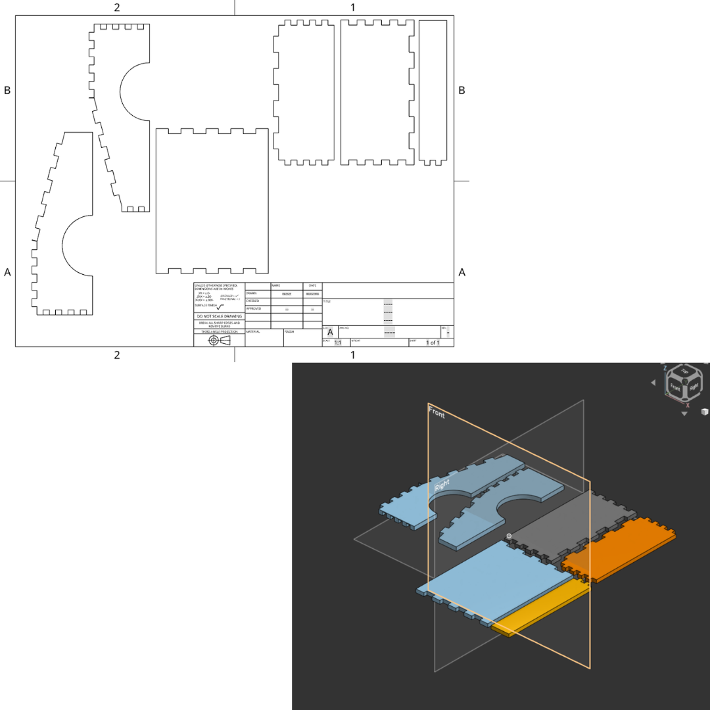
Figure 4.6 (Click the image to view fullscreen)
OnShape Laser Cut Layout (Figure 4.6):
As described above, the auto-layout feature and laser joint feature are apparent in our design pictured in Figure 4.6. Prior to actually making our cut, it is required that all pieces of the model are laying flat, therefore the auto-layout feature saves a lot of time. Laying out each part is critical, as the laser cut is a vertical burn on only the 2D level, unlike a 3D printer with x, y, and z. Post lay out, we exported into a drawing, ensured the dimensions were accurate, imported into Light Burn, and then begin our cut. We also made sure at least one of us was watching the cut as it was going, to check for any signs of fire or toxicity.
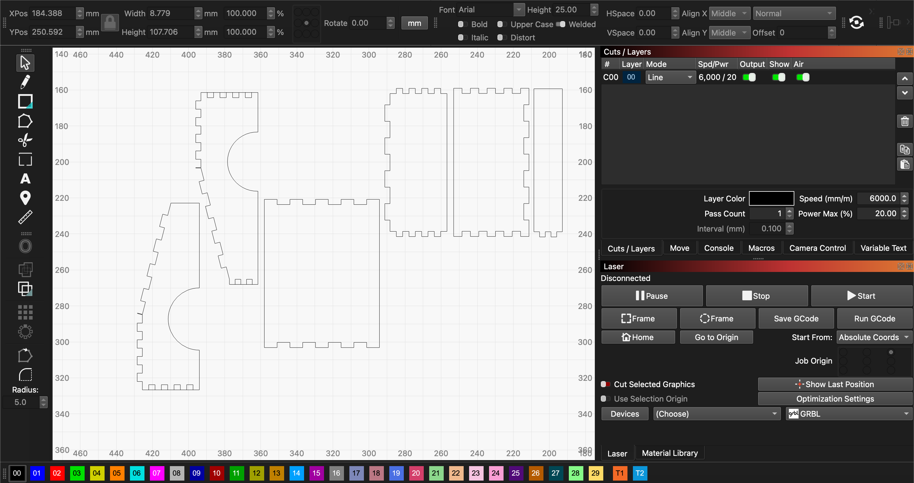
Figure 4.7 (Click the image to view fullscreen)
Settings-Laser Cut (pictured above):
Issues:
Soldering
We had a few issues throughout the process, so I will go through them in order of our approach. Starting with contructing the circuit board, the most time consuming portion was due to having an older soldering iron. The issue is after a while the iron's tip begins to oxidize over time and the more used the iron the more quickly it oxidizes. When this occurs, the solder has a very difficult time heating up and therefore, does not bind to the circuit board or the iron, itself. The consequence of having to re-tin the iron before each solder, slowed us down immensely. On the second day we used a much newer iron, and therefore finished the board quicker and with cleaner solder joints.
3D Prints
Both of our 3D prints were successful; however, there are a few changes I would have made. For the first, grey print, I placed the object upside down in order to avoid using too large of supports, thus decreasing the time. Although this did decrease time, the supports bound to the object too intensely, leaving a "messy" top layer. For our second print, we flipped the object, which avoided the supports on the top, and left a really smooth look. We even got the added benefit of racing stripes, due to an accidently unoticed extrusion in OnShape!
For the second 3D print, we should have also been more careful adding the windshield. When we tilted the shape we added on the top, it extruded through the chassis into the interior cavity. This cause the supports in the front of the cavity to stick, not allowing for them to be fully remove. To avoid this, next time we will be more cautious in removing any unwanted parts.
Laser Cut
Our laser cut went really well, as expected due to the precision of the machine. It printed our joints perfectly as expected, and burned off almost no noticable material, keeping our scale true. The only major downside to the lasercut is the lingering scent of burnt wood, which although easy to remove from our hands, not so easy to remove from the build; limited where a laser cut is desired. For example, you might not want to bring a laser-cut item, made a week ago into an enclosed office space. Overall, my major take away is that laser cutting is superior in speed and precision on basic models, however, for more complex builds, where time is not limited, 3D printing will provide a more complete and detailed model.
Desktop Waste Bin
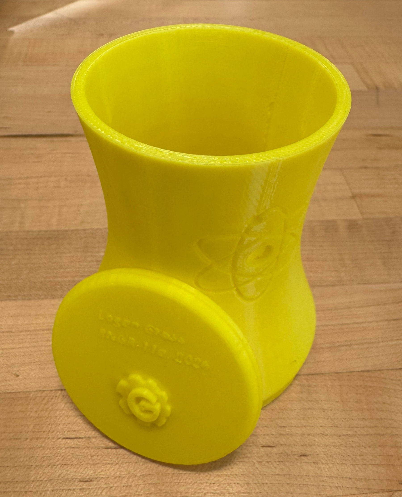
Figure 5.1 (Click the image to view fullscreen)
For this project, I wanted to explore a few different avenues. For starters, my main goal was to become more comfortable with the CAD tools: TinkerCAD and OnShape. I started with an open source model I found online. I went with a "nuclear radiation tower" because the shape provides a wider base than its top; therefore, it is much more difficult to tip. The original model was similair in shape but very different in function. Originally, the model had an open bottom, with the base having a corkscrew pattern about 1/4 inch high. This led me to believe this was some sort of "screw," to secure the model into some pre-existing location. My original intent was to create a pencil-cup, so that cork screw was not relevant to me. Another portion of the model which needed to be removed was the original top on the model. The top was secured to the object so it did not allow for anything to be placed in from above...quite the issue for a pencil-cup. I address how I delt with the unwanted parts of the model in the following sections. Overall, my main goals were to use TinkerCAD to create the shape of the object, and then I later transitioned the pencil cup into a "desktop waste basket," by creating a lid in OnShape. Below is an image of the sketch I designed on paper, starting from the open source design and ending with what I planned on creating (Figure 5.2).

Figure 5.2 (Click the image to view fullscreen)
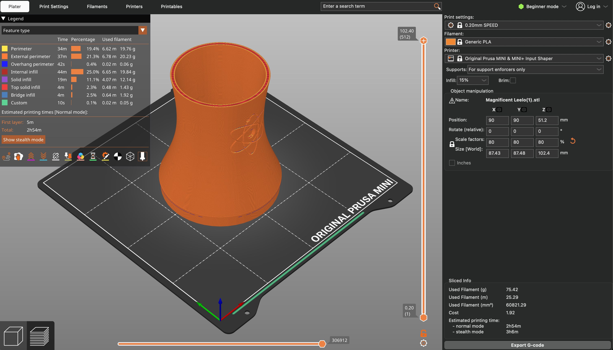
Figure 5.3 (Click the image to view fullscreen)
Settings Cup (pictured above):
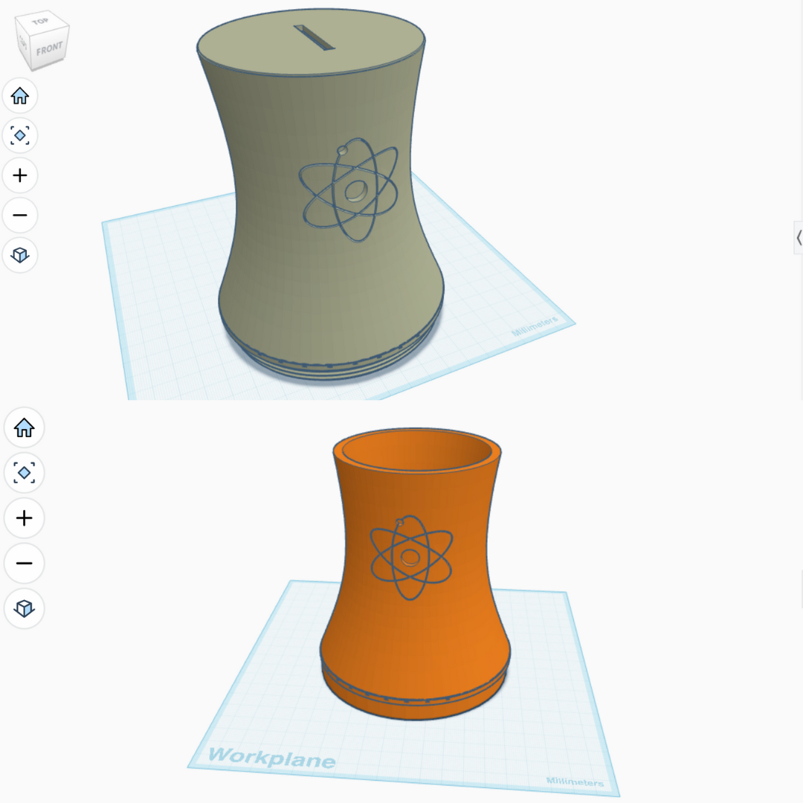
Figure 5.4 (Click the image to view fullscreen)
Originally I wanted to edit my object starting in OnShape, but quiclkly realized TinkerCAD was a better option. The main reasoning for this is because TinkerCAD had a much more intuitive and simplictic design. For example, TinkerCAD treated the object, as seen in Figure 5.3, as one shape, and not a complex system of shapes making up the larger whole. OnShape, on the other hand, created a "mesh" on the object, which individualized each curve to be its own entity. This meant that I could not easily adjust the shape in a uniform fashion. Fortunately, TinkerCAD allows for altering shapes on a less detailed level; this is also the reason why I beleive it was imported into Tinker as a much simplier model. Since, I now knew which CAD I wanted to focus on for the cup, I began my edits with the base. As mentioned above and now clearly depicted in the top half of Figure 5.3, the base was a corkscrew, as well as, being completely wide open. Utilizing the user-friendly interface TinkerCAD provides, I did not have to actually remove or alter the corkscrew pattern. Instead, I added a cynlinder of radius 0.5m+(radius of the base). It was key to make the new shape I created slightly larger in order to have it "overtake" the corkscrew file when connecting both as a single object. After aligning the cynlinder properly and choosing my desired height I combined both objects and successfully removed the corkscrew and added a base with only two additions; adding a cylinder and raising the height.
The second alteration I did to my object in TinkerCAD, before exploring OnShape was removing the top with a small slit in it, which can be seen in the top half of Figure 5.3. As mentioned prior, my original intent was a pencil holder and although I transitioned it to catch loose paper, it can still be used as such. Therefore, I wanted to keep the option of an open top to give it that dual purpose aspect. To do this, I used a similar strategy as to when I added the base. I began with a cylinder just above the top of the model, sized it so the radius was larger than the top, and finally dragged the object down. At this point, I had a larger top, which seems to be going backwards, but it was not! I could then make the solid object a hole, which then, in turn, removed the cap on my object. I now had the desired structure of a cup; a solid closed base, closed walls, and open top. However, we are still missing a separable top for it to be a completed waste paper basket.
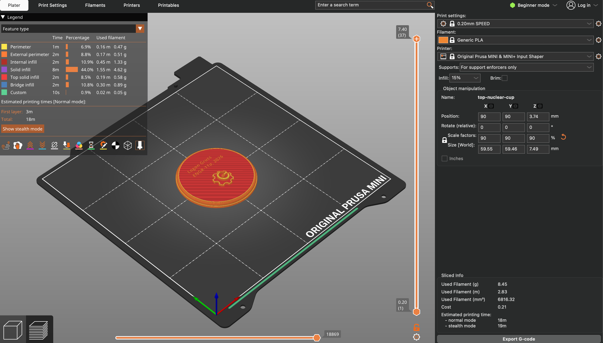
Figure 5.5 (Click the image to view fullscreen)
Settings Top of Bin (pictured above):
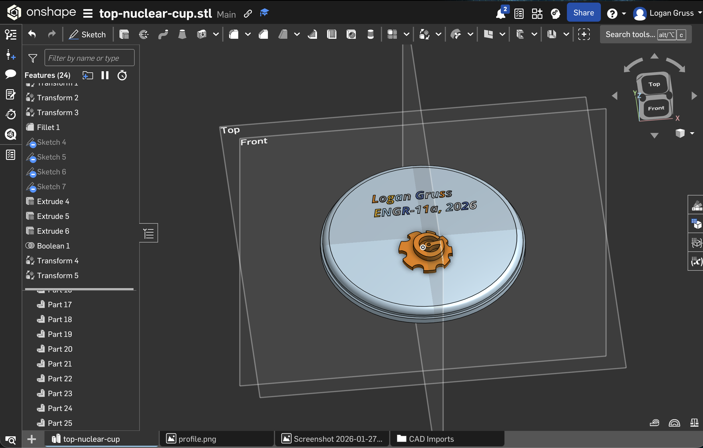
Figure 5.6 (Click the image to view fullscreen)
Before officially being able to call this a desktop waste bin, I needed to add a removable top. I wanted to explore another CAD tool, instead of TinkerCAD, so I opted to use OnShape in order to create a more detailed and personalized top. I begin with the removed portion I had from my tinkerCAD file, prior to altering the original. I took the top portion to ensure the dimensions I started with were exactly the dimensions of the top of the bin. After importing it into Onshape, I then used the sketch tool to insert a smaller circle inside my imported shape and extruded it upwards. I did this in order to make sure the top can properly fit into the base without slideing off or falling in. After I had a proper cap, I filetted the now lifted interior cylinder so it more easily fits on top of the base. A sharp corner would not fit well with the curved walls of the base. I decided to try out a few more tools in OnShape, the first being a more trivial addition of text on the interior of the cap. The second tool I tried out, was implementing and tracing an image to add my own custom logo. As seen in figure 5.5, under the text I createad a raised image of varrying heights to excentuate the logo. In order to do this I imported the image and then used the sketch tool to trace the image. After I deleted the orginal image and was left with the traced version, I extruded the tracing at varrying heights which created the 3D logo on the interior of the cap.
Issues:
Overall, the print itself came out without any major issues. I had to print the top twice unfortunately because the first cap was slightly too large. In order to fix this I just scaled it down in the prusa slicer to about 90% the original object's dimensions. My biggest hurdle was when I imported my design into OnShape the entire design became a mess of mesh! This meant the curved walls were beging formed by an array of smaller triangles to best approximate the curve. Since the walls were now made of individual triagnles, creating a mesh, I was limited to how I could style the base. Instead of spending a lot of time individually adjusting my added text, for example, to the mesh itself, I opted to add my styalization to another portion of my design. Hence, the transition from a pencil-cup to a desktop waste bin which required the added top potion. Instead of perosnalizing a very difficult to work with mesh object, I was now personalizing the easy to alter top, which was one solid object. This allowed me to create the interior text and logo seen on the inside of the cap.
e-NABLE Prosthetic Hand
This project was focused on creating a prosthetic device for children. Specifically, my partner Rebecca and I, created a functional hand that allows the user to grasp light-weight objects, as well as, utilize other motor functions they may currently be lacking. The reason for focusing the device towards children, is due to the fact that when a child requires a prosthetic the duration in which the device is created is greater than the growing rate of the child. This results in a device that would be created for an individual, which will most likely no longer fit when ready for shipment. The 3D printed version we created is more simplistic, less costly, and time-conscious. This allows for a product that, although not functionally superior to a normal prosthetic, gives children the opportunity to gain more mobility earlier on. Prior to reading on, it is important to note that ALL prints associated with the creation of the hand itself, not the additions, should be printed at 150% scale from the original files in the resources at the end. I cannot stress enough how beneficial the "Directions Review" section will be for those starting this project from the beginning steps. Please visit that section prior to beginning the build as you will save time, effort, and hopefully recall the focus is always on the end user throughout all steps.
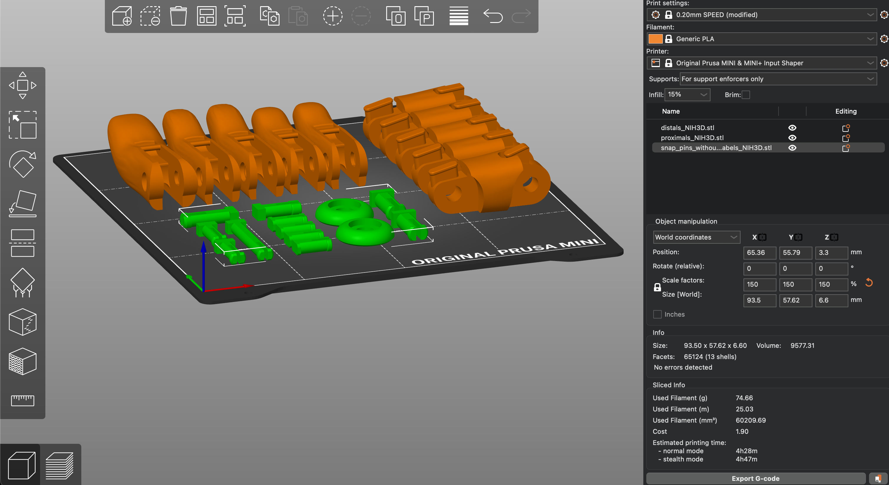
Figure 6.1 (Click the image to view fullscreen)
Settings Digits and Pins (pictured above):
Print Notes:
We printed the device in separate parts, being the digits and pins, palm, and wrist guard with the tension block. Focusing on the digits, we needed to add a "raft" prior to slicing, which stopped any small pieces from disconnecting from the plate. Although the raft was necessary for the digits, the removal of the raft presented it's own challenges which I discuss, in general, further in the issues section and "Directions Review" tab.
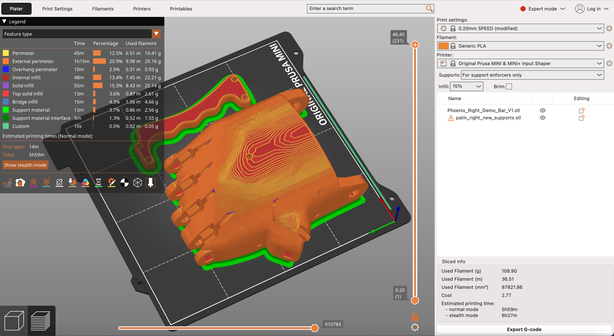
Figure 6.2 (Click the image to view fullscreen)
Settings Palm (pictured above):
Print Notes:
The palm required supports to hold up the cavity where you would insert your appendage. The support was unlike the normal "tree" supports and was a box, which made the removal of supports relatively seamless; not the case with the added raft. We added a raft to the base, similar to the digits, however, it proved unnecessary and even problematic. The raft connected too well to palm which left a lot of jagged edges when removing. We removed these with an exact-o knife, but it added a significant amount of time. To conclude, I would suggest not using a raft for the palm. With the palm, we also printed a bar to go across the inner cavity so my partner and I could test the product. Although, the best way to really test a product, especially one such as a mobility device, is to allow a user with a disability relevant to the device to use it for a while and deliver feedback. Even more impactful, is having that member actually become part of the entire design, testing, and distributing process. Unfortunately, due to time constraints we could not outsource for a member of the team outside of the Maker's space, therefore used the crossbar to attempt to use the device ourselves.
Figure 6.3 (Click the image to view fullscreen)
Settings Wrist Guard(pictured above):
Print Notes:
The palm, pins, and digits are more or less self explanatory in purpose, however when discussing the assembly I will go into further detail about how they operate. The wrist guard and tension block are a bit less intuitive. The tension block is designed to provide the necessary resistance for the device to function properly, acting as an anchor for the wiring. The pins are secured in the block, and wires ran through the hand. In our case, we used string. Obvious from the slicer photo, the guard is not yet properly shaped. In order to form the piece into a proper shape, we used a reflow station attached to a heat gun; shaping the object manually (seen by scrolling through Figure 6.3). This allowed for more customizability, as well as, a cleaner look on the overall print. Shaping after printing also avoids required supports for floating edges, saving time.
Assembly Process
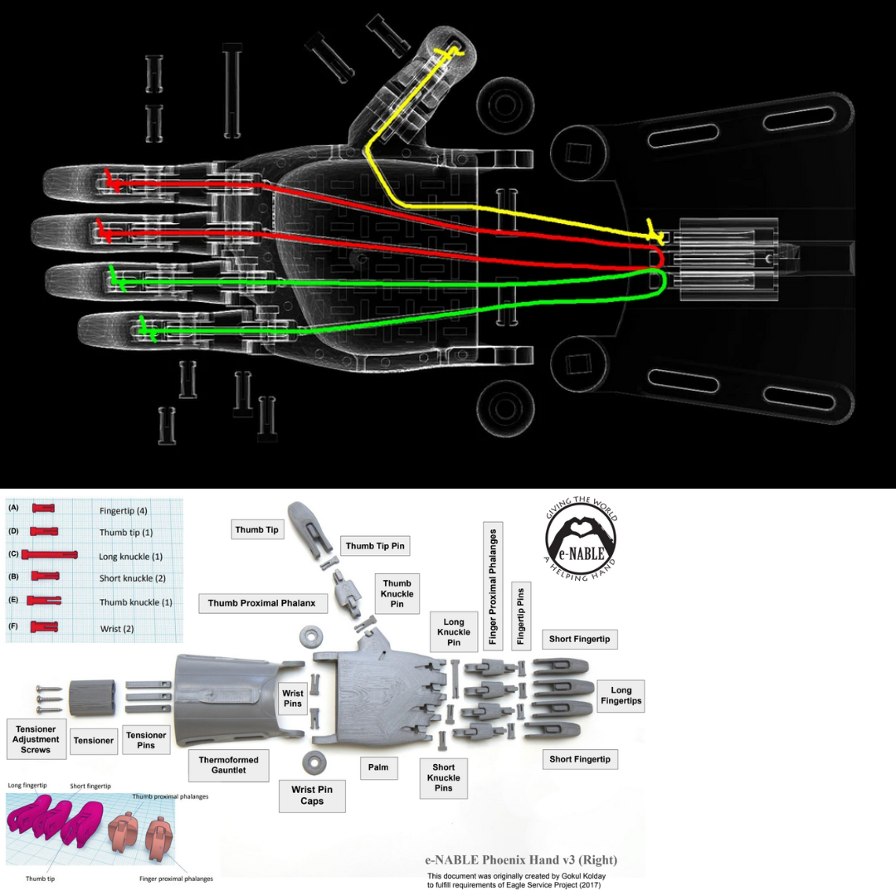
Figure 6.4 (Click the image to view fullscreen)
Prior to beginning our assembly process we watched a video on a similar build but felt it did not focus enough on the orientation of parts, such as the tension block pins, along with lacking detail in regard to the wiring process. We found the images in Figure 6.4 to be the most helpful resources. For one, being detailed images we were not forced to pause a video multiple times to follow any needed instruction. Secondly, the X-ray image displayed the interior wiring structure far better than simplifying watching someone do it themselves. This not only provided clear direction for how to wire our prosthetic, but also allowed us to better understand how the device is going to use tension in order to grasp around objects. Figure 6.5 shows the layout of the components we printed prior to assembly.
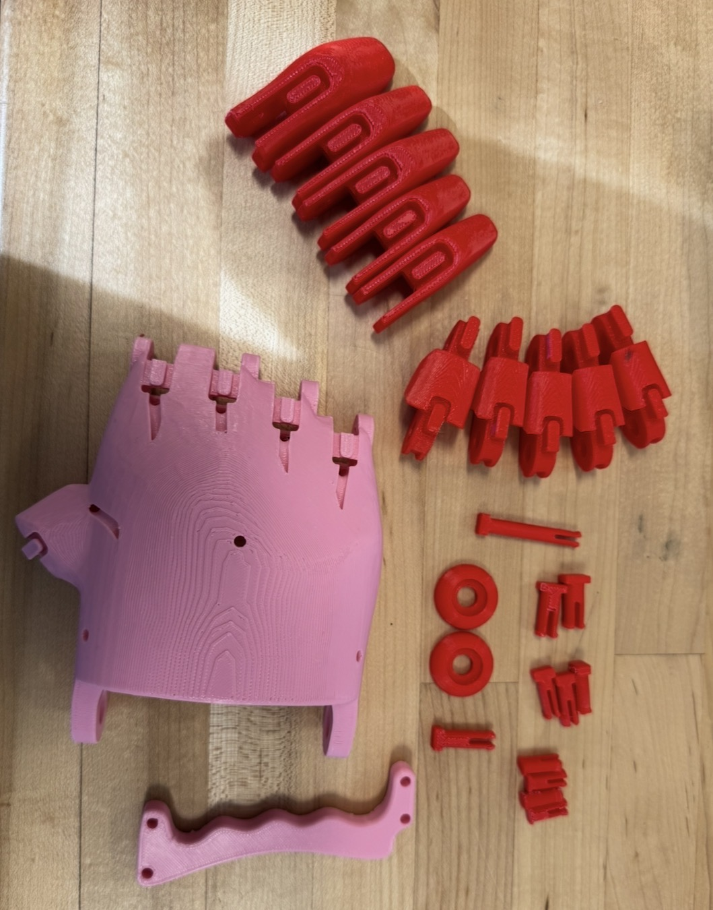
Figure 6.5 (Click the image to view fullscreen)
Adding to the Design
Grocery/Bag Hook and Wire Management
We added three additions to the original design. The first two are exact copies of one another at different scales. The larger hook, mounted on the top of the hand, will provide the user with the ability to freely hold shopping bags and even heavy bottles with a hook to ease the strain on the fingers. The identical hook on the side of the hand provides cable management for the final addition we made. The second hook, was actually a "mistake," in the sense that we did not properly scale the object prior to printing. However, this ended up being a happy accident as we still found a use case for the smaller hook. The main addition can be seen below in Figure 6.6. To avoid cluttering this portion of my description, I added the file for the hook below and a photo to view print settings in Figure 6.6. For scaling purposes, the larger hook is 200% larger than the smaller.
Figure 6.6 (Click the images to view fullscreen)
E.T. Addition
For the final addition we were looking more at the process of combining an electronic with our 3D-print, rather than solving a mobility issue. However, the nature of this addition does solve another problem. We imported one of the fingers into onshape and removed the interior, where the print would be. Then, after extruding a small canal under the region where the strings are, we had a cavity to insert a LED and run a wire through the top of the hand. After two iterations we finally decided on the finger in Figure 6.7. I Included a screenshot of the print settings below, as well as, the file. This was a great way to integrate electronics with our 3D-printed components; given the target audience is children, a "fun" feature such as a light can make the device more enjoyable, and therefore, more likely to be used.
Figure 6.7 (Click the images to view fullscreen)
Issues:
The majority of issues and pitfalls in instruction are found in the Directions Review section, along with a peer review for another group's instructions (which I highly suggest viewing). Although listed in detail under the mentioned section, I'll briefly list a forewarning here:
Links and Resources:
Model used for fingers, pins, wrist guard and tension block components: BioVisUser123. Human Heart Model. Version 2.1, NIH 3D, 2024. Fingers, Pins, Tension Block, Wrist Guard (v3)
Model used for palm: BioVisUser123. Human Heart Model. Version 2.1, NIH 3D, 2024. Palm Only (v2)
X-ray Wire Guide (Scroll through the photos to locate the X-ray wire guide)
Directions Review
At the bottom of the projects page I listed the resources we used to assemble the hand. Throughout our assembly there were various times when we felt there could be improvements on the instructions. Firstly, I would suggest only printing the pins and fingers with a raft. The palm and wrist tension blocks and pins did not need rafts. The process of removing a raft from the palm and crossbar were time consuming and could easily be avoided by opting out of using a raft for certain components. I really enjoyed the peer review below for more information on the rafting! Next issue fell with the screws necessary for assembly. There was not clear mention of which screws to use and after scaling up 1.5x neither an M3 nor an M4 screw fit properly. However, using a little bit of force, you can fit an M4 screw. When trying to find the proper tension for the strings, it was more or less a guessing game. Ideally, you want the thumb and pointer to get as close as possible, while allowing to be fully at rest when not in a grip. Again, there was no mention of this in the instructions, however, it was not difficult to figure out. I suggest first tying the string to the fingers and working back towards the tension block. The fingers are much more mobile and therefore are easier to tie up to, first.Finally, I want to touch on the notion we explored in a chapter from the book What Can a Body Do? How we Meet the Built World -Sara Hendren. This chapter focuses on the development of our environment and products relative to the disabled. She mentions the importance of keeping the user in mind when developing such a device. As well as, the necessity to include a user who actually struggles with the disability you are trying to alleviate. I noticed that when constructing this device, there was minimal mention about the disabled user in almost all videos and text outside of that provide by our instructor, Prof. Ian Roy. Prof. Roy perfectly aligned our visions, with the focus that they are practical for real world users. However, this was diverted when created the product, as there was no attention towards the user post-beginning construct. I feel this is important to mention, as we, the makers,must actively connect all portions of the project to a disabled user. This begins with the ideation and follows through into the final steps of testing and distributing. If not thinking of the user during all steps, are we really building the product for them? The answer is no. As mentioned in the projects section, the best strategy is always incorporate the desired user during all steps. An idea Hendren presents quite well.
The idea of incorperating a deesired user during the instructions could not be stressed enough. I find it important to highlight the fact there was no mention of how to assemble this item if you are actually disabled. Although this being a prototype, specifically for anyone to test, someone who may use a finished product in the future would benefit a lot from understanding how to fix or assemble the hand if necessary. Not to mention, when further understanding a product you are given, you can more easily adapt it to your needs.
Peer Review
We also peer reviewed another team, Ben Khayat and Maria Mykhaylyk. I attached their FAQs below to refer to throughout this section. First, the guidance on which exact open source files to use was really helpful because it removes a lot of confusion right away. Knowing to use the Phoenix Hand V2 palm with the V3 fingers and other V3 parts, and to scale everything to 150%. Second, the section on rafts and print settings was very helpful because it gives practical advice that can prevent failed prints. Rebecca andd I used rafts for almost all parts, where Ben and Maria opted out of using a raft for a few portions, which provided a cleaner end result. They also clearly explain which parts need rafts, which do not, and also gives strength tips like using over 25% infill and PETG instead of PLA. Personally, we used PLA, however, I noticed the silk PLA broke on two ddifferent wrist gaurds on two different occasions. Third, the explanation of threading string through the palm using wire stood out as especially useful because it gives a simple, realistic trick that makes assembly easier. We used an alan key and tweezers, which although worked relatively well, a wire will be able to pass through the channels more easily. Overall, I highly suggest reviewing their .pdf prior to even printing. Thank you Ben and Maria!
Line-Tracking Car
This was a joint venture between Ben Khayat and myself in which we explored a few different mediums for constructing a path following kit-car. The vehicle uses two sensors to determine the color change (from bright to dark) of the path and corrects accordingly. The ability to detect these changes, keeps the car focused on the dark electrical-tape path we created.
The kit we used came with all the needed components, including two sensors, motors, wheels, and essential capacitors and resistors (shown in Figure 4.1). We soldered on all the necessary components, which I detailed further below along with certain issues we had. Prior to our build, neither of us had had any experience soldering. The manual (linked here: https://m.media-amazon.com/images/I/A1lEYFXJO1L.pdf) gave thorough instructions with images, however, it did not provide much insight on the soldering process. For example, certain components required different strategies for making the solder joints. The manual, however, wrote all instructions the same regarding "how" to solder the components.
Figure 4.1 (Click the image to view fullscreen)
Constructing The Circuit Board
Prior to constructing the chassis for the car, we needed to solder the parts, shown in the tray above, to the circuit board. We found it helpful to organize our workspace prior to beginning. To best split the work load, we each soldered a few components and then the other would solder an equal amount until we were finished. On the first day, we were using an old soldering iron which downgraded the quality of each solder. In order to combat this, we were constantly tinning and cleaning our iron with iospropyl alchohol. Luckily on day two, we acquired a much newer iron, and therefore had cleaner solders and were no longer required to tin the tip each time. This is apparent in the top right photo in Figure 4.1, by the difference in solder quality. Besides capacitors, LEDs, resistors, components to set the intensity of correction, and other parts for our board, we also had sensors and motors. The sensors allowed for our kit-car to determine the intensity of color on it's left and right sides, which keeps it in line. These sensors would then drive power to either the left motor or right motor depending on what is needed to continue on the dark line. The two LEDs on the front-sides, indicate which wheel is recieving power. The angle of intesity the vehicle will take is dependent on a set of controls that we had to adjust until we were satisfied with the movement. For a turn of too great an angle could send the car off the track and it become "lost." I included a sketch of the dimensions of the board down below.
Figure 4.2 (Click the image to view fullscreen)
Dimensions:
Width (total)=80 mm
Width (interior)=70 mm
Length (total)=110 mm (30mm+80mm)
On/Off Slot=15x15 mm^2
Height= 31mm minimum
Figure 4.2 (Click the image to view fullscreen)
3D Printed Chassis
We decided to create two alternative prints for our project, working together in a shared OnShape space. We shared this responsibilty by adjusting and adding to the project as we both saw fit. The first, being the fully grey print in Figure 4.2, was a focus on scale and fit. In order to determine the proper dimensions for the print we used a caliper to find the length, width, and height of our car. It is important to also pay special attention to the front of the car, which was an arc instead of a flat bumper. By finding the radius of that arc, we easily scaled the front. The first print provided us with confirmation that our dimensions were correct and additions were not outside the realm of our printer's capabilities. This model also ensured we followed the proper guidelines, which allows us to remove the cap to access batteries, provides a small hole for the power button, visibility to LEDs, and free sensors. We printed the first model upside down, to avoid supports in the inner cavity, after ensuring the print preview looked successful by checking the layers in Bambu Studio, we completed version 1.
For our second print, we decided to test multi-filament printing, along with stressing angles to see if it would fail without support. Starting with the angular stress, the windshield is tilted at approximately a 40 degree angle, within the threshold of the print, and therefore succeeded nicely. We also added two faux exhausts on the back to test whether the small exhuast ports would cave-in on itself, it did not! Secondly, we flipped the print, so this time, there were supports holding up the inner cavaity. This provided a cleaner top surface than our first print. Finally, we decided to use two colors to excentuate the windshield and exhausts. Although this increased print time, requiring a filament tower, it also improved the aesthetic and clearly depicts which objects are part of the chassis, itself, and which are existing for visual imrpovement.
Figure 4.3 (Click the image to view fullscreen)
Settings Print 1-Grey (Figure 4.3):
Figure 4.4 (Click the image to view fullscreen)
Settings Print 2-Black/Grey (Figure 4.4):
Figure 4.5 (Click the image to view fullscreen)
Laser Cut Chassis
We also created a wooden laser cut, using 3mm plywood sheets. To deisgn our laser cut, we used OnShape to create the three dimensional model, and then used the add-on feature, "auto-layout," to lay each individual face onto the x-plane. Prior to laying the faces flat, we also used the add-on feature, "Laser Joint," which automatically creates a series of joints between two joined, selected edges. This was crucial in benefiting us during assembly, as the parts now fit similiar to a 3D puzzle. The joints also provide further connection support along the face edges, allowing the faces to essentially "rest" on one another. This is superior to flat edges meeting, as there is no connection besides glue in that case. After laying out our completed model, we then exported it in OnShape as a drawing file. This is the desired import file for Light Burn. Below in Figure 4.6, I provide visuals for our drawing in onshape, laser cut settings in Light Burn, and the 3D model.
Figure 4.6 (Click the image to view fullscreen)
OnShape Laser Cut Layout (Figure 4.6):
As described above, the auto-layout feature and laser joint feature are apparent in our design pictured in Figure 4.6. Prior to actually making our cut, it is required that all pieces of the model are laying flat, therefore the auto-layout feature saves a lot of time. Laying out each part is critical, as the laser cut is a vertical burn on only the 2D level, unlike a 3D printer with x, y, and z. Post lay out, we exported into a drawing, ensured the dimensions were accurate, imported into Light Burn, and then begin our cut. We also made sure at least one of us was watching the cut as it was going, to check for any signs of fire or toxicity.
Figure 4.7 (Click the image to view fullscreen)
Settings-Laser Cut (pictured above):
Issues:
Soldering
We had a few issues throughout the process, so I will go through them in order of our approach. Starting with contructing the circuit board, the most time consuming portion was due to having an older soldering iron. The issue is after a while the iron's tip begins to oxidize over time and the more used the iron the more quickly it oxidizes. When this occurs, the solder has a very difficult time heating up and therefore, does not bind to the circuit board or the iron, itself. The consequence of having to re-tin the iron before each solder, slowed us down immensely. On the second day we used a much newer iron, and therefore finished the board quicker and with cleaner solder joints.
3D Prints
Both of our 3D prints were successful; however, there are a few changes I would have made. For the first, grey print, I placed the object upside down in order to avoid using too large of supports, thus decreasing the time. Although this did decrease time, the supports bound to the object too intensely, leaving a "messy" top layer. For our second print, we flipped the object, which avoided the supports on the top, and left a really smooth look. We even got the added benefit of racing stripes, due to an accidently unoticed extrusion in OnShape!
For the second 3D print, we should have also been more careful adding the windshield. When we tilted the shape we added on the top, it extruded through the chassis into the interior cavity. This cause the supports in the front of the cavity to stick, not allowing for them to be fully remove. To avoid this, next time we will be more cautious in removing any unwanted parts.
Laser Cut
Our laser cut went really well, as expected due to the precision of the machine. It printed our joints perfectly as expected, and burned off almost no noticable material, keeping our scale true. The only major downside to the lasercut is the lingering scent of burnt wood, which although easy to remove from our hands, not so easy to remove from the build; limited where a laser cut is desired. For example, you might not want to bring a laser-cut item, made a week ago into an enclosed office space. Overall, my major take away is that laser cutting is superior in speed and precision on basic models, however, for more complex builds, where time is not limited, 3D printing will provide a more complete and detailed model.
Links and Resources: